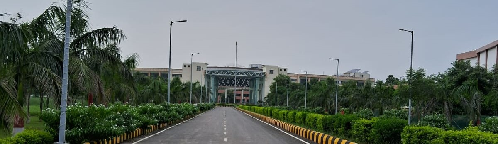

Prateek
Aspiring AI engineer with a strong foundation in Electronics and Communication Engineering, seeking opportunities to apply my skills in machine learning, deep learning, and AI ethics to create innovative and impactful solutions.
Email: prat.cann.170701@gmail.com | Phone: +91-9234699400
LinkedIn Profile |
GitHub Profile

Welcome to My Portfolio
Education
- M.Tech in Artificial Intelligence (2024-26) - Indian Institute of Technology, Patna
- B.Tech in Electronics and Communication Engineering (2020-24) - Birla Institute of Technology, Mesra
- Class XII (2018-20) - K.V. No. 2, Bailey Road, Patna (CBSE) - Percentage: 90.2%
- Class X (2017-18) - K.V. No. 2, Bailey Road, Patna (CBSE) - Percentage: 85.8%
Technical Skills
- Programming: C, Python, MATLAB
- AI/ML: TensorFlow, PyTorch, Scikit-learn
- Tools: Silvaco TCAD, OriginPro, Artios, Gaussian V, Linux
- Data Visualization: Tableau, Power BI, Matplotlib
Projects
- Fairness System in AI (2024): Designed algorithms to ensure ethical and unbiased decision-making in AI systems, focusing on reducing bias and improving transparency.
- Fabrication of CdTe based Thin Film Heterojunction Solar Cell (2024): Led a project to fabricate and analyze the performance of CdTe-based thin-film solar cells, achieving full marks in the final semester.
Research Internships
- Summer Intern, Semi-Conductor Laboratory (SCL), MeitY, GoI, Mohali (2023): Studied the effect on sheet resistance with varying sacrificial oxide thickness and implant species in ion implantation.
- Summer Intern, Institute of Nano Science & Technology (INST), DST, GoI, Mohali (2022): Investigated quantum interference in benzene-based molecules.
Certifications
- Certificate of Distinction in Semiconductor Technology, IISc Bengaluru, 2024
- ISWDP Level-1 and Level-2 in Semiconductor Program, IISc Bengaluru, 2024